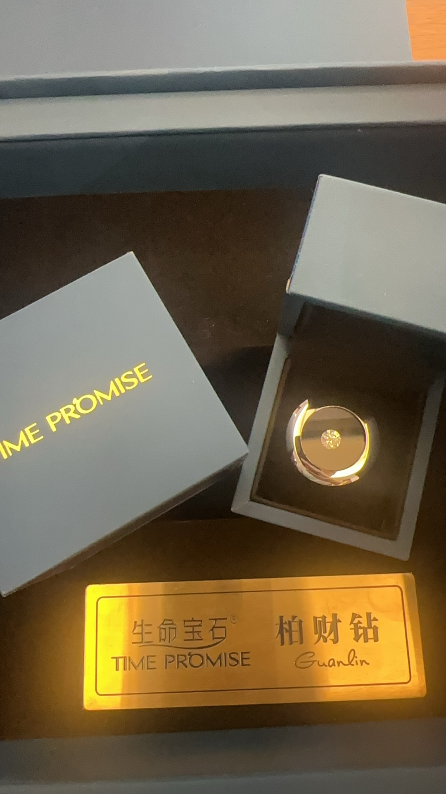

Quick Answer
Memorial diamonds can be cross-sold into funeral services with healthy partner margins. Implementation requires: (1) a white-label manufacturing partner with sample tracking, (2) staff training focused on factual explanation, (3) clear pricing tiers, (4) transparent refund and remake policies, and (5) marketing materials that inform rather than pressure. No lab space or equipment is needed on your premises. Turnaround is 60 days from sample receipt.
Funeral homes and pet cremation services operate on thin margins. Cremation fees are commoditized. Urns and memorial jewelry have limited markup. And the customer base is not growing — everyone needs your service eventually, but repeat business is nonexistent. The only way to increase revenue per customer is to sell additional products and services at the point of need.
Memorial diamonds are one of the highest-margin add-on products available to the funeral industry. A single 1-carat memorial diamond can generate more profit than a standard cremation package. And unlike urns or keepsake jewelry, memorial diamonds are genuinely differentiated — they are custom-manufactured from the customer's own biological material, making them impossible to source from a generic wholesaler.
This guide is for funeral directors, pet cremation operators, and memorial business owners who want to understand how cross-selling memorial diamonds works in practice. We cover the implementation framework, staff training, pricing strategy, and how to choose a manufacturing partner. No sentimental language. No marketing fluff. Just the operational and financial details you need to evaluate whether this product fits your business.
Key Takeaway: Cross-selling memorial diamonds is not about pushing products on grieving families. It is about making a genuinely meaningful option available at the moment families are already making memorial decisions. The businesses that succeed treat memorial diamonds as a service, not a sale — with transparent pricing, clear documentation, and zero pressure.
TL;DR — Quick Summary
Memorial diamonds can be cross-sold into funeral services with healthy partner margins. Implementation requires: (1) a white-label manufacturing partner with sample tracking, (2) staff training focused on factual explanation, (3) clear pricing tiers, (4) transparent refund and remake policies, and (5) marketing materials that inform rather than pressure. No lab space or equipment is needed on your premises. Turnaround is 60 days from sample receipt.
Why Memorial Diamonds Fit the Funeral Service Model
The funeral industry is built on a simple reality: families facing loss need to make decisions quickly, often without prior knowledge of their options. The businesses that serve them well are not the ones with the lowest prices — they are the ones that present clear choices, explain them honestly, and handle the logistics so families do not have to.
Memorial diamonds fit this model for three structural reasons. First, the customer is already in a memorial mindset. They are actively deciding how to honor someone, which makes them receptive to options they might not consider in normal circumstances. Second, the product is genuinely differentiated — it is not another urn or pendant, but a custom-manufactured gemstone that exists nowhere else in the world. Third, the revenue model is additive: you do not replace existing services, you add a premium option alongside them.
For pet cremation services specifically, the opportunity is even stronger. Pet owners are already a self-selected group that values emotional connection and are willing to spend on memorial products. The pet memorial market has grown steadily as pet ownership rises and the humanization of pets continues. A pet cremation service that offers memorial diamonds alongside standard packages captures a segment of customers who would otherwise take their business to a dedicated memorial diamond company after leaving your facility.
For a detailed revenue analysis of how pet cremation services specifically benefit from memorial diamond partnerships, see our pet cremation revenue analysis.
What Cross-Selling Actually Means in Practice
Cross-selling is not upselling. Upselling pushes a customer to spend more on the same product category. Cross-selling introduces a complementary product from a different category. A customer who orders a cremation package is not being upsold to a more expensive cremation — they are being offered a memorial diamond as a separate, additive purchase.
The distinction matters because the psychology is different. Upselling triggers resistance because the customer feels manipulated into spending more than they planned. Cross-selling, done properly, is simply making customers aware of options they may not have known existed. The key is timing and framing. Memorial diamonds should be presented as an option, not a recommendation. Families should feel informed, not sold to.
In practice, this means your staff should be trained to say: "We also offer memorial diamonds, which are custom-grown from the remains. Here is a brochure if you would like to learn more." Not: "You should really consider a memorial diamond — it is the most meaningful option." The first approach respects the customer's autonomy. The second creates pressure that damages trust.
A successful cross-selling program has three components: awareness (customers know the option exists), access (customers can easily get information and place an order), and assurance (customers trust that the product will be delivered as promised). If any of these three is missing, the program fails.
Implementation: From Pilot to Full Launch
Launching a memorial diamond cross-selling program should be done in phases. A full launch on day one is risky because your staff needs time to learn the product, your systems need to be tested, and you need to understand customer demand before committing resources.
Phase 1: Partner Selection (Weeks 1-2). The first step is choosing a white-label memorial diamond manufacturer. This is the most critical decision because the manufacturer determines product quality, turnaround time, documentation standards, and your ability to handle customer complaints. Evaluate at least three manufacturers using the six criteria outlined later in this guide. Request sample certificates, tracking documentation, and partner pricing before making a decision.
Phase 2: Pilot Program (Weeks 3-8). Run a pilot with a limited group of customers — perhaps 10-20 families who express interest. This gives you real data on conversion rates, customer questions, and operational challenges. During the pilot, collect detailed feedback on what customers liked, what confused them, and what objections they had. Use this data to refine your process before scaling.
Phase 3: Staff Training (Weeks 4-6, overlapping with pilot). Train all customer-facing staff on the basics of memorial diamonds: what they are, how they are made, how long they take, and what they cost. Staff do not need to be materials scientists, but they need to answer common questions confidently. Provide printed FAQ sheets and make sure staff know when to escalate to a specialist.
Phase 4: Marketing Integration (Weeks 6-10). Add memorial diamonds to your service menu, website, and printed materials. Create a dedicated page or brochure that explains the process in plain language. Include pricing tiers, turnaround times, and what the customer receives (certificate, packaging, tracking). Do not hide pricing — transparent pricing builds trust and pre-qualifies customers.
Phase 5: Full Launch (Week 10+). Roll out the program to all customers. Monitor conversion rates, average order value, and customer satisfaction. Set a review cycle — monthly for the first quarter, quarterly thereafter — to assess performance and adjust pricing, marketing, or staff training as needed.

Staff Training: How to Present Memorial Diamonds Without Pressure
The most common mistake in memorial diamond cross-selling is training staff to "sell" rather than "inform." Grieving families are not looking for a sales pitch. They are looking for someone who can explain their options clearly and respect their decisions. Staff training should focus on three skills: factual explanation, active listening, and graceful handling of objections.
Factual explanation means describing the process without embellishment. "We send a small sample of your pet's hair to a laboratory. They extract the carbon, purify it, and grow it into a diamond under extreme heat and pressure. The process takes approximately 60 days. You receive a finished diamond with an independent certificate." That is all a family needs to know in the initial conversation. Technical details about HPHT synthesis catalysts or graphitization temperatures can be found in our technology overview for partners who want deeper knowledge.
Active listening means paying attention to what the family actually wants. Some families will immediately ask about cost. Others will ask about color options or how much hair is needed. Others will ask whether the diamond is "really" from their pet. Staff should be trained to answer each question directly without redirecting the conversation toward a sale.
Handling objections means knowing what to say when a family declines. The correct response is: "That is completely understandable. If you change your mind, the information is in the brochure." Not: "Are you sure? It is a very special way to remember them." The second response creates guilt and damages the relationship. Families who feel respected are more likely to return or recommend your service to others.
For a deeper technical understanding of what goes into a memorial diamond, staff can reference the BioGem Lab manufacturing process, which includes detailed documentation on purification, synthesis, and quality validation.
Explore Manufacturing Capabilities
Understand the full HPHT synthesis pipeline: carbon purification, graphitization, crystal growth, and independent certification. Documentation available for qualified partners.
Manufacturing ProcessPricing and Margin Analysis
Memorial diamond pricing follows a tiered structure based on carat weight, color grade, and certification. For partners, the critical numbers are wholesale cost, retail pricing, and margin percentage. A professional white-label manufacturer provides transparent pricing sheets that allow partners to set competitive retail prices while maintaining healthy margins.
The exact wholesale cost depends on carat weight, color grade, and certification level. Near-colorless grades (E–H) are the standard offering. Certification is a fixed cost per stone, so it represents a larger percentage of margin on smaller stones. Partner agreements should include transparent pricing sheets with no hidden fees. BioGem Lab does not offer fancy color diamonds; our standard production yields E–H near-colorless only.
The key pricing principle is to remain competitive with direct-to-consumer memorial diamond companies while capturing a meaningful margin. If your retail price is higher than what a customer could get by going directly to a manufacturer, you will lose sales. If your margin is too thin, the program is not worth the operational effort. The sweet spot is typically a margin that allows you to price at or slightly below direct-to-consumer alternatives while maintaining profitability.
For a detailed breakdown of wholesale pricing structures and margin calculations, see our wholesale pricing guide.
Six Questions to Ask a Memorial Diamond Manufacturer
Not all memorial diamond suppliers are manufacturers. Many are resellers who outsource production to third parties. This creates risk for your business because you have no control over quality, turnaround time, or documentation. Before signing a partnership agreement, ask these six questions.
1. Do you own your production facility? A real manufacturer has in-house HPHT presses, purification equipment, and cutting facilities. A reseller cannot show you their lab because they do not have one. Ask for facility photos or, better yet, a virtual tour. If they refuse, they are probably outsourcing.
2. How do you track samples from receipt to delivery? Sample tracking is the core capability of a memorial diamond operation. Ask for documentation: unique IDs, photographs, batch records, and chain-of-custody logs. If the supplier describes their process in vague terms like "we are very careful," that is not sufficient.
3. What certification do you provide? Independent third-party certification (IGI, GIA, HRD) is the standard. Manufacturer-issued certificates are not credible. Ask whether the certificate is searchable on the lab's website and whether it explicitly states the diamond is laboratory-grown.
4. What is your remake policy? No manufacturing process is perfect. A professional manufacturer will have a documented remake policy that specifies under what conditions a stone is remade, how long it takes, and who bears the cost. Avoid suppliers with no remake policy or those who require you to absorb all remake costs.
5. What partner support do you provide? White-label partners need training materials, branded brochures, sample certificates, and pricing sheets. Ask what materials are included and whether they can be customized with your branding. A manufacturer invested in partner success will provide these resources at no extra cost.
Operational Considerations: What You Need on Your Premises
One of the advantages of a white-label memorial diamond program is that you do not need laboratory equipment, chemical handling permits, or specialized facilities. Your premises need only three things: secure sample storage, order documentation systems, and trained staff.
Sample storage is the most critical operational detail. When a family provides a hair sample, you need a secure, labeled container that prevents contamination and loss. The container should be sealed, photographed, and assigned a unique ID that matches the order record. Store samples in a locked cabinet or safe until they are shipped to the manufacturer. Never process multiple samples in the same workspace without cleaning protocols.
Order documentation includes the customer's contact information, sample type and quantity, diamond specifications (carat, color, cut), and delivery instructions. Use a standardized form that collects all required information in one place. This reduces errors and ensures the manufacturer receives complete instructions. Digital forms are preferable to paper because they create an automatic record and can be shared with the manufacturer electronically.
Trained staff need to understand the basics of the process, the pricing structure, and how to handle customer questions. They do not need technical expertise in HPHT synthesis, but they should know enough to answer the ten most common questions without referring customers to a brochure. Provide staff with a one-page FAQ and require them to review it before interacting with customers about memorial diamonds.
Common Pitfalls and How to Avoid Them
Even well-intentioned cross-selling programs fail when they make predictable mistakes. Here are the four most common pitfalls and how to avoid them.
Pitfall 1: Overselling. Staff who are incentivized to sell memorial diamonds will inevitably pressure grieving families. This creates negative reviews, damages your reputation, and reduces long-term conversion. Solution: Do not use sales commissions for memorial diamonds. Instead, treat them as a service option and measure staff on customer satisfaction, not sales volume.
Pitfall 2: Unclear pricing. Customers who cannot find pricing information will assume the product is unaffordable and disengage. Solution: Publish pricing tiers prominently on your website and in your brochure. Include a range, not a single price, to accommodate different sizes and color grades.
Pitfall 3: Partnering with a reseller. Resellers create a middle layer that adds cost, delays communication, and reduces your control over quality. Solution: Always verify that your partner owns their production facility. Ask for facility documentation, process details, and tracking capabilities.
Pitfall 4: Neglecting remake policies. When a finished diamond does not meet specifications, the customer will look to you for a solution. If your manufacturer has no remake policy, you are left absorbing the cost or disappointing the customer. Solution: Define remake conditions in your partner agreement before launching the program. Communicate these terms to customers at the point of sale.
Bottom Line: Is Memorial Diamond Cross-Selling Right for Your Business?
Memorial diamond cross-selling is not a fit for every funeral business. It works best for services that already emphasize personalization and premium options. If your business model is built on low-cost cremation with minimal customer interaction, memorial diamonds will not convert well because you lack the relationship depth needed to introduce a premium product.
It works well for pet cremation services, boutique funeral homes, and memorial product retailers that already sell keepsake jewelry or custom urns. These businesses have the customer relationships, the premium positioning, and the operational infrastructure to support a cross-selling program.
The financial case is straightforward: a single memorial diamond sale can generate more profit than a standard cremation package, with minimal incremental overhead. The operational case is also clear: white-label programs require no lab space, no equipment, and no technical expertise on your premises. The only real investment is staff training and partner selection.
If you are evaluating memorial diamond partnerships, review the BioGem Lab partnership framework to understand white-label terms, sample tracking documentation, and partner support resources. For direct questions about manufacturing capabilities, turnaround times, or pricing structures, contact the laboratory.
Frequently Asked Questions
What funeral services are best suited for memorial diamond cross-selling?
Pet cremation services, traditional funeral homes, veterinary clinics with end-of-life services, and memorial product retailers are the best fit. Pet cremation services have the highest conversion rate because the customer is already handling the remains and has an emotional connection. Traditional funeral homes can cross-sell memorial diamonds alongside urns and memorial jewelry. The key is having an existing relationship with grieving families at the moment they are making memorial decisions.
How do we train staff to discuss memorial diamonds with grieving families?
Staff training should focus on factual, transparent communication rather than emotional appeals. Train staff to explain the process simply: carbon is extracted from the hair sample, purified, and grown into a diamond under high pressure and heat. Provide printed materials or digital brochures that families can review at home. Never pressure a grieving family into a decision during the initial consultation. The goal is to make the option known and let families decide on their own timeline. Partner with a manufacturer that provides training materials and documentation.
What margin can a funeral home expect from memorial diamonds?
Margin depends on your pricing strategy and the wholesale cost structure from your manufacturer. A typical white-label memorial diamond program offers wholesale prices that allow partners to maintain competitive margins while remaining competitive with direct-to-consumer pricing. The key is setting clear pricing tiers and communicating the value of the service: custom synthesis, sample tracking, independent certification, and branded packaging.
Do we need special equipment or lab space to offer memorial diamonds?
No. A white-label memorial diamond program operates entirely through your supplier. You collect the hair sample, complete the order documentation, and send the sample to the manufacturer. The manufacturer handles purification, synthesis, cutting, polishing, certification, and delivery. Your only physical requirements are secure sample storage containers and a system for tracking sample chain of custody. No laboratory equipment, no chemical handling, and no specialized training are needed on your premises.
How do we handle sample collection and chain of custody?
Chain of custody is the most critical operational detail. Use sealed, labeled containers with unique IDs that match the order documentation. Photograph the sample container when it is sealed and when it is opened by the manufacturer. A professional manufacturer will provide tracking documentation that links each sample to a unique batch number, including photographs, weight records, and processing timestamps. The BioGem Lab manufacturing process includes full batch traceability with documentation at every stage, which partners can reference for customer inquiries.
What happens if a customer wants a refund or remake?
Refund and remake policies should be clearly defined before you launch the service. Most memorial diamond manufacturers offer remakes if the finished stone does not meet the agreed specifications (color, clarity, carat weight), but they do not offer refunds on custom synthesis because the process is irreversible and the carbon sample is consumed. Your partner agreement should specify remake conditions, timelines, and any cost-sharing. Communicate these terms clearly to customers at the point of sale. Partner with a manufacturer that has a documented remake policy and transparent quality control.
Li Lihua — Chief Scientist
Patent inventor ZL 201010565778.9. View profile →
Explore Manufacturing Capabilities
Understand the full HPHT synthesis pipeline: carbon purification, graphitization, crystal growth, and independent certification. Documentation available for qualified partners.
Manufacturing ProcessRelated Articles
Pet Cremation Services Increase Revenue with Memorial Diamonds
Revenue analysis and implementation guide for pet cremation businesses adding memorial diamonds to their service portfolio.
Read article →Memorial Diamond Wholesale Pricing: What Pet Cremation Services Need to Know
A practical margin guide for pet cremation services and memorial businesses selling memorial diamonds: wholesale costs, retail pricing, profit margins, and pricing strategies.
Read article →OEM Memorial Diamond Manufacturing: A Partner's Guide
What to look for in an OEM memorial diamond partner: manufacturing capabilities, quality systems, turnaround times, and partner support structures.
Read article →